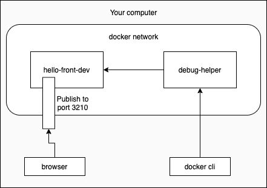

أساسيات تنسيق الحاويات
لدينا الآن فهم أساسي لـDocker ويمكننا استخدامه لإعداد قاعدة بيانات لتطبيقنا بسهولة مثلاً. لننقل الآن تركيزنا إلى الواجهة الأمامية.
React داخل حاوية
لننشئ تطبيق React ونضعه في حاوية بعد ذلك. نبدأ بالخطوات المعتادة:
$ npm create vite@latest hello-front -- --template react
$ cd hello-front
$ npm install
الخطوة التالية هي تحويل شيفرة JavaScript وCSS إلى ملفات ثابتة جاهزة للإنتاج. يمتلك Vite بالفعل الأمر build كسكربت npm فلنستخدمه:
$ npm run build
...
Creating an optimized production build...
...
The build folder is ready to be deployed.
...
رائع! الخطوة الأخيرة هي إيجاد طريقة لاستخدام خادم لتقديم الملفات الثابتة. وكما تعلم، يمكننا استخدام express.static مع خادم Express لتقديم الملفات الثابتة. سأترك ذلك كتمرين لك لتنفذه في المنزل. بدلاً من ذلك، سنمضي قدماً ونبدأ بكتابة ملف Dockerfile الخاص بنا:
FROM node:24
WORKDIR /usr/src/app
COPY . .
RUN npm ci
RUN npm run build
يبدو ذلك صحيحاً إلى حد ما. لنبنِه ونرَ إن كنا على المسار الصحيح. هدفنا أن ينجح البناء دون أخطاء. ثم سنستخدم bash للتحقق داخل الحاوية من وجود الملفات.
$ docker build . -t hello-front
=> [4/5] RUN npm ci
=> [5/5] RUN npm run
...
=> => naming to docker.io/library/hello-front
$ docker run -it hello-front bash
root@98fa9483ee85:/usr/src/app# ls
Dockerfile dist index.html package-lock.json public vite.config.js
README.md eslint.config.js node_modules package.json src
root@98fa9483ee85:/usr/src/app# ls dist
assets index.html vite.svg
يُعدّ serve خياراً صالحاً لتقديم الملفات الثابتة بما أن لدينا Node بالفعل في الحاوية. لنجرب تثبيت serve وتقديم الملفات الثابتة بينما نحن داخل الحاوية.
root@98fa9483ee85:/usr/src/app# npm install -g serve
added 89 packages in 2s
root@98fa9483ee85:/usr/src/app# serve -n dist
┌────────────────────────────────────────┐
│ │
│ Serving! │
│ │
│ - Local: http://localhost:3000 │
│ - Network: http://172.17.0.2:3000 │
│ │
└────────────────────────────────────────┘
رائع! لنضغط ctrl+c للخروج ثم نضيف ذلك إلى ملف Dockerfile.
يتحول تثبيت serve إلى تعليمة RUN في ملف Dockerfile. وبهذه الطريقة تُثبَّت الاعتمادية أثناء عملية البناء. وسيصبح الأمر الخاص بتقديم المجلد dist هو الأمر الذي يبدأ الحاوية:
FROM node:24
WORKDIR /usr/src/app
COPY . .
RUN npm ci
RUN npm run build
// BEGIN HIGHLIGHT
RUN npm install -g serve
CMD ["serve", "-n", "dist"]
// END HIGHLIGHT
عندما نبني الصورة الآن باستخدام docker build . -t hello-front ونشغّلها باستخدام docker run -p 5001:3000 hello-front، سيصبح التطبيق متاحاً على http://localhost:5001.
استخدام مراحل متعددة
مع أن serve خيار صالح، يمكننا فعل ما هو أفضل. الهدف الجيد هو إنشاء صور Docker بحيث لا تحتوي على أي شيء غير ذي صلة. فمع عدد أدنى من الاعتماديات، تقل احتمالية تعطّل الصور أو إصابتها بثغرات مع مرور الوقت.
صُمّمت عمليات البناء متعددة المراحل لتقسيم عملية البناء إلى عدة مراحل منفصلة، حيث يمكن تحديد أجزاء ملفات الصورة التي تنتقل بين المراحل. وهذا يفتح إمكانيات للحد من حجم الصورة لأن جميع النواتج الجانبية للبناء ليست ضرورية للصورة الناتجة. والصور الأصغر أسرع في الرفع والتنزيل وتساعد في تقليل عدد الثغرات التي قد يعاني منها برنامجك.
مع عمليات البناء متعددة المراحل، يمكن استخدام حل مجرَّب وموثوق مثل Nginx لتقديم الملفات الثابتة دون كثير من المتاعب. وتخبرنا صفحة Nginx على Docker Hub بالمعلومات المطلوبة لفتح المنافذ و«استضافة بعض المحتوى الثابت البسيط».
لنستخدم ملف Dockerfile السابق ولكن نغيّر تعليمة FROM لتضمين اسم المرحلة:
# تعليمة FROM الأولى أصبحت الآن مرحلة تُسمى build-stage
FROM node:24 AS build-stage // HIGHLIGHT LINE
WORKDIR /usr/src/app
COPY . .
RUN npm ci
RUN npm run build
# هذه مرحلة جديدة، كل ما قبلها اختفى، باستثناء الملفات التي نريد نسخها بـCOPY
FROM nginx:1.29-alpine // HIGHLIGHT LINE
# انسخ المجلد dist من مرحلة build-stage إلى /usr/share/nginx/html
# وُجد الموقع الهدف هنا في صفحة Docker hub
COPY --from=build-stage /usr/src/app/dist /usr/share/nginx/html // HIGHLIGHT LINE
لقد أعلنّا أيضاً مرحلة أخرى، حيث تُنسخ فقط الملفات ذات الصلة من المرحلة الأولى (المجلد dist الذي يحتوي على المحتوى الثابت).
بعد أن نبنيه مرة أخرى، تصبح الصورة جاهزة لتقديم المحتوى الثابت. المنفذ الافتراضي لـNginx هو 80، لذا سيعمل شيء مثل -p 8000:80، ولهذا يجب تغيير وسائط docker run قليلاً.
تتضمن عمليات البناء متعددة المراحل أيضاً بعض التحسينات الداخلية التي قد تؤثر على عمليات البناء لديك. على سبيل المثال، تتخطى عمليات البناء متعددة المراحل المراحل غير المستخدمة. وإذا أردنا استخدام مرحلة لتحل محل جزء من خط أنابيب البناء، مثل الاختبار أو الإشعارات، فيجب تمرير بعض البيانات إلى المراحل التالية. وفي بعض الحالات يكون هذا مبرراً: انسخ الشيفرة من مرحلة الاختبار إلى مرحلة البناء. وهذا يضمن أنك تبني الشيفرة المُختبَرة.
13. الواجهة الأمامية لتطبيق المهام
14. الاختبار أثناء عملية البناء
التطوير في الحاويات
لننقل تطوير تطبيق المهام بالكامل إلى حاوية. وهناك بضعة أسباب قد تدفعك إلى ذلك:
- الحفاظ على تشابه البيئة بين التطوير والإنتاج لتجنب الأخطاء التي تظهر فقط في بيئة الإنتاج
- تجنب الفروقات بين المطورين وبيئاتهم الشخصية التي تؤدي إلى صعوبات في تطوير التطبيق
- مساعدة أعضاء الفريق الجدد على الانضمام بمجرد تثبيت بيئة تشغيل الحاويات - دون طلب أي شيء آخر.
كل هذه أسباب رائعة. والمقابل هو أننا قد نواجه بعض السلوك غير المعتاد عندما لا نشغّل التطبيقات بالطريقة التي اعتدناها. وسنحتاج إلى فعل أمرين على الأقل لنقل التطبيق إلى حاوية:
- تشغيل التطبيق في وضع التطوير
- الوصول إلى الملفات باستخدام VS Code
لنبدأ بالواجهة الأمامية. بما أن ملف Dockerfile سيكون مختلفاً بشكل كبير عن ملف Dockerfile الإنتاجي، سننشئ ملفاً جديداً باسم dev.Dockerfile.
ملاحظة سنستخدم الاسم dev.Dockerfile لتهيئات التطوير والاسم Dockerfile في غير ذلك.
تشغيل Vite في وضع التطوير ينبغي أن يكون سهلاً. لنبدأ بما يلي:
FROM node:24
WORKDIR /usr/src/app
COPY . .
# غيّر npm ci إلى npm install لأننا سنكون في وضع التطوير
RUN npm install
# الأمر npm run dev هو الأمر الذي يبدأ التطبيق في وضع التطوير
CMD ["npm", "run", "dev", "--", "--host"]
لاحظ الوسيطين الإضافيين -- --host في تعليمة CMD. فهما مطلوبان لكشف خادم التطوير ليكون مرئياً خارج شبكة Docker. افتراضياً، يُكشف خادم التطوير على localhost فقط، ورغم أننا ما زلنا نصل إلى الواجهة الأمامية باستخدام عنوان localhost، فهي في الواقع مرتبطة بشبكة Docker.
أثناء البناء يمكن استخدام العلامة -f لتحديد الملف الذي سيُستخدم، وإلا فسيعود افتراضياً إلى Dockerfile، لذا سيبني الأمر التالي الصورة:
docker build -f ./dev.Dockerfile -t hello-front-dev .
سيُقدَّم Vite على المنفذ 5173، لذا يمكنك اختبار عمله بتشغيل حاوية مع نشر ذلك المنفذ.
المهمة الثانية، الوصول إلى الملفات باستخدام VSCode، لم تُعالَج بعد. وهناك طريقتان على الأقل لفعل ذلك:
- إضافة Visual Studio Code Remote - Containers
- وحدات التخزين (volumes)، وهي الشيء نفسه الذي استخدمناه للحفاظ على بيانات قاعدة البيانات
لنتناول الخيار الأخير لأنه سيعمل مع محررات أخرى أيضاً. لنجرِ تجربة باستخدام العلامة -v. وإذا نجح ذلك، سننقل التهيئة إلى ملف docker-compose.
لاستخدام -v، سنحتاج إلى إخباره بالمجلد الحالي. وينبغي أن يُخرج الأمر pwd مسار المجلد الحالي لنا. لنجرب ذلك باستخدام echo $(pwd) في سطر الأوامر. يمكننا استخدام ذلك كطرف أيسر لـ-v لربط المجلد الحالي بداخل الحاوية، أو يمكننا استخدام مسار المجلد الكامل.
$ docker run -p 5173:5173 -v "$(pwd):/usr/src/app/" hello-front-dev
> todo-vite@0.0.0 dev
> vite --host
VITE v5.1.6 ready in 130 ms
الآن يمكننا تحرير الملف src/App.jsx، وينبغي أن تُحمَّل التغييرات فورياً إلى المتصفح!
إذا كان لديك جهاز MacBook من سلسلة M، فسيفشل الأمر أعلاه. وفي رسالة الخطأ نلاحظ ما يلي:
Error: Cannot find module @rollup/rollup-linux-arm64-gnu
المشكلة في المكتبة rollup التي لديها إصدار خاص بكل نظام تشغيل وبنية معالج. وبسبب ربط وحدة التخزين، تستخدم الحاوية الآن مجلد node_modules من مجلد الجهاز المضيف حيث يكون @rollup/rollup-darwin-arm64 (الإصدار المناسب لـMac M1/M2) مثبتاً، لذا لا يُعثر على الإصدار الصحيح للمكتبة للحاوية @rollup/rollup-linux-arm64-gnu.
هناك عدة طرق لإصلاح المشكلة. لنستخدم ربما أبسطها. ابدأ الحاوية مع bash كأمر، ثم شغّل npm install داخل الحاوية:
$ docker run -it -v "$(pwd):/usr/src/app/" hello-front-dev bash
root@b83e9040b91d:/usr/src/app# npm install
الآن أصبح إصدارا مكتبة rollup مثبتين والحاوية تعمل!
بعد ذلك، لننقل التهيئة إلى الملف docker-compose.dev.yml. وينبغي أن يكون هذا الملف في جذر المشروع أيضاً:
services:
app:
image: hello-front-dev
build:
context: . # سيأخذ السياق هذا المجلد باعتباره "سياق البناء"
dockerfile: dev.Dockerfile # هذا سيخبر ببساطة عن ملف dockerfile الذي يجب قراءته
volumes:
- ./:/usr/src/app # يمكن أن يكون المسار نسبياً، لذا يكفي ./ للقول "الموقع نفسه الذي فيه docker-compose.yml"
ports:
- 5173:5173
container_name: hello-front-dev # هذا سيسمي الحاوية hello-front-dev
مع هذه التهيئة، يمكن لـdocker compose -f docker-compose.dev.yml up تشغيل التطبيق في وضع التطوير. بل لا تحتاج حتى إلى تثبيت Node لتطويره!
ملاحظة سنستخدم الاسم docker-compose.dev.yml لملفات compose الخاصة ببيئة التطوير، والاسم الافتراضي docker-compose.yml في غير ذلك.
يُعدّ تثبيت اعتماديات جديدة صداعاً في تهيئة تطوير كهذه. ومن الخيارات الأفضل تثبيت الاعتمادية الجديدة داخل الحاوية. فبدلاً من تنفيذ npm install axios مثلاً، عليك تنفيذه في الحاوية قيد التشغيل مثل docker exec hello-front-dev npm install axios، أو إضافته إلى package.json وتشغيل docker build مرة أخرى.
15. إعداد بيئة تطوير للواجهة الأمامية
التواصل بين الحاويات في شبكة Docker
تُنشئ أداة Docker Compose شبكة بين الحاويات وتتضمن DNS لربط حاويتين بسهولة. لنضف خدمة جديدة إلى Docker Compose وسنرى كيف تعمل الشبكة وDNS.
Busybox برنامج تنفيذي صغير يحتوي على أدوات متعددة قد تحتاجها. ويُلقَّب بـ«سكين الجيش السويسري لنظم Linux المدمجة»، ويمكننا بالتأكيد الاستفادة منه.
يمكن أن يساعدنا BusyBox في تصحيح أخطاء تهيئاتنا، لذا إذا تُهت في تمارين هذا القسم اللاحقة، استخدمه لمعرفة ما يعمل وما لا يعمل. لنستخدمه لاستكشاف ما ذُكر للتو: أن الحاويات توجد داخل شبكة ويمكنها الاتصال ببعضها بسهولة. ويمكن إضافة Busybox إلى المزيج بتغيير docker-compose.dev.yml إلى:
services:
app:
image: hello-front-dev
build:
context: .
dockerfile: dev.Dockerfile
volumes:
- ./:/usr/src/app
ports:
- 5173:5173
container_name: hello-front-dev
debug-helper: // HIGHLIGHT LINE
image: busybox // HIGHLIGHT LINE
لن يكون داخل حاوية Busybox أي عملية قيد التشغيل، لذا لا يمكننا تنفيذ exec فيها. ولهذا سيبدو مخرج docker compose up أيضاً هكذا:
$ docker compose -f docker-compose.dev.yml up 0.0s
Attaching to front-dev, debug-helper-1
debug-helper-1 exited with code 0
front-dev |
front-dev | > todo-vite@0.0.0 dev
front-dev | > vite --host
front-dev |
front-dev |
front-dev | VITE v7.3.1 ready in 153 ms
هذا متوقع لأنه مجرد صندوق أدوات. لنستخدمه لإرسال طلب إلى hello-front-dev ونرى كيف يعمل DNS. وبينما تكون hello-front-dev قيد التشغيل، يمكننا تنفيذ الطلب باستخدام wget لأنها أداة مضمّنة في Busybox لإرسال طلب من debug-helper إلى hello-front-dev.
مع Docker Compose يمكننا استخدام docker compose run SERVICE COMMAND لتشغيل خدمة بأمر محدد. ويحتاج الأمر wget إلى العلامة -O - لإخراج الاستجابة إلى المخرج القياسي (stdout):
$ docker compose -f docker-compose.dev.yml run debug-helper wget --header="Host: localhost" -O - http://app:5173
Connecting to app:5173 (192.168.240.3:5173)
writing to stdout
<!doctype html>
<html lang="en">
<head>
<script type="module">
...
الرابط http://app:5173 هو الجزء المثير للاهتمام هنا. لقد قلنا ببساطة إننا نريد الاتصال بالمنفذ 5173 للخدمة app. وapp هو اسم الخدمة المحدد في ملف docker-compose.dev.yml:
services:
app:
image: hello-front-dev
build:
context: .
dockerfile: dev.Dockerfile
volumes:
- ./:/usr/src/app
ports:
- 5173:5173 // HIGHLIGHT LINE
container_name: hello-front-dev
المنفذ المستخدم هو المنفذ الذي يكون التطبيق متاحاً منه في تلك الحاوية، وهو محدد أيضاً في docker-compose.dev.yml. ولا يحتاج المنفذ إلى أن يُنشر لكي تتمكن الخدمات الأخرى في الشبكة نفسها من الاتصال به. فـ«المنافذ» (ports) في ملف docker-compose مخصصة للوصول الخارجي فقط.
لنغيّر تهيئة المنفذ في docker-compose.dev.yml لنؤكد على ذلك:
services:
app:
image: hello-front-dev
build:
context: .
dockerfile: dev.Dockerfile
volumes:
- ./:/usr/src/app
ports:
- 3210:5173 // HIGHLIGHT LINE
container_name: hello-front-dev
debug-helper:
image: busybox
مع docker compose up يكون التطبيق متاحاً على http://localhost:3210 من الجهاز المضيف، لكن الأمر
docker compose -f docker-compose.dev.yml run debug-helper wget --header="Host: localhost" -O - http://app:5173
لا يزال يعمل لأن المنفذ لا يزال 5173 داخل شبكة Docker.
توضح الصورة أدناه ما يحدث. يطلب الأمر docker compose run من debug-helper إرسال الطلب داخل الشبكة، بينما يرسل المتصفح في الجهاز المضيف الطلب من خارج الشبكة.

الآن بعد أن عرفت مدى سهولة العثور على الخدمات الأخرى في docker-compose.yml ولم يتبقَّ لدينا ما نصححه، يمكننا إزالة debug-helper وإعادة المنافذ إلى 5173:5173 في ملف compose لدينا.
حول الوصول إلى خادم تطوير Vite
قد تتساءل لماذا يحتوي الأمر أعلاه على header="Host: localhost". والسبب أنه افتراضياً لا يُسمح لخادم تطوير Vite بالاستجابة إلا إذا كان المضيف هو localhost. والآن اسم المضيف داخل شبكة Docker هو app، وإذا لم نضبط ترويسة Host، فسنحصل على HTTP/1.1 403 Forbidden كاستجابة. ويمكننا السماح بأسماء مضيفين إضافية بتحرير الملف vite.config.js:
import { defineConfig } from 'vite'<br>import react from '@vitejs/plugin-react'<br><br>export default defineConfig({<br> plugins: [react()],<br> server: {<br> allowedHosts: ['app', 'localhost'],<br> }<br>})
الآن لم نعد نحتاج إلى ترويسة Host ويعمل ما يلي:
docker compose -f docker-compose.dev.yml run debug-helper wget -O - http://app:5173
16. تشغيل todo-backend في حاوية تطوير
التواصل بين الحاويات في بيئة أكثر طموحاً
بعد ذلك، سنضيف وكيلاً عكسياً (reverse proxy) إلى ملف docker-compose.dev.yml لدينا. ووفقاً لويكيبيديا
الوكيل العكسي هو نوع من خوادم الوساطة (proxy) يسترجع الموارد نيابةً عن العميل من خادم واحد أو أكثر. ثم تُعاد هذه الموارد إلى العميل وكأنها صادرة عن خادم الوكيل العكسي نفسه.
وفي حالتنا، سيكون الوكيل العكسي نقطة الدخول الوحيدة إلى تطبيقنا، والهدف النهائي هو وضع كل من واجهة React الأمامية وواجهة Express الخلفية خلف الوكيل العكسي.
هناك خيارات مختلفة متعددة لتنفيذ وكيل عكسي، مثل Traefik وCaddy وNginx وApache (مرتبة حسب الإصدار الأول من الأحدث إلى الأقدم).
اختيارنا هو Nginx.
لنضع الآن hello-frontend خلف الوكيل العكسي.
لننشئ الآن ملف nginx.dev.conf في جذر المشروع ونتخذ القالب التالي نقطة انطلاق. وسنحتاج إلى إجراء تعديلات طفيفة لتشغيل تطبيقنا:
# تعليمة events مطلوبة، لكن القيم الافتراضية كافية
events { }
# خادم http يستمع على المنفذ 80
http {
server {
listen 80;
# تُعالَج الطلبات التي تبدأ بالجذر (/)
location / {
# الأسطر الثلاثة التالية مطلوبة لكي تعمل إعادة التحميل الفوري
proxy_http_version 1.1;
proxy_set_header Upgrade $http_upgrade;
proxy_set_header Connection 'upgrade';
# تُوجَّه الطلبات إلى http://localhost:5173
proxy_pass http://localhost:5173;
}
}
}
ملاحظة نستخدم اصطلاح التسمية المألوف أيضاً مع Nginx، nginx.dev.conf لتهيئات التطوير، والاسم الافتراضي nginx.conf في غير ذلك.
بعد ذلك، أنشئ خدمة Nginx في ملف docker-compose.dev.yml. أضف وحدة تخزين كما هو موضح في صفحة Docker Hub بحيث يكون الجانب الأيمن :/etc/nginx/nginx.conf:ro، والجزء الأخير ro يعلن أن وحدة التخزين ستكون للقراءة فقط:
services:
app:
# ...
nginx:
image: nginx:1.29
volumes:
- ./nginx.dev.conf:/etc/nginx/nginx.conf:ro
ports:
- 8080:80
container_name: reverse-proxy
depends_on:
- app # انتظر بدء حاوية الواجهة الأمامية
وبعد إضافة ذلك، يمكننا تشغيل docker compose -f docker-compose.dev.yml up ونرى ما يحدث.
$ docker container ls
CONTAINER ID IMAGE COMMAND PORTS NAMES
a02ae58f3e8d nginx:1.29.1 ... 0.0.0.0:8080->80/tcp reverse-proxy
5ee0284566b4 hello-front-dev ... 0.0.0.0:5173->5173/tcp hello-front-dev
سيؤدي الاتصال بـ http://localhost:8080 إلى صفحة مألوفة المظهر بحالة 502.
وهذا لأن توجيه الطلبات إلى http://localhost:5173 لا يؤدي إلى أي مكان، إذ لا يوجد تطبيق يعمل على المنفذ 5173 في حاوية Nginx. فبحكم التعريف، يشير localhost إلى الحاسوب الحالي المستخدم للوصول إليه. وبما أن localhost فريد لكل حاوية، فإنه يشير دائماً إلى الحاوية نفسها.
لنختبر ذلك بالدخول إلى حاوية Nginx واستخدام curl لإرسال طلب إلى التطبيق نفسه. وفي استخدامنا، curl شبيه بـwget لكنه لا يحتاج إلى أي علامات.
$ docker exec -it reverse-proxy bash
root@374f9e62bfa8:\# curl http://localhost:80
<html>
<head><title>502 Bad Gateway</title></head>
...
ولمساعدتنا، أنشأ Docker Compose شبكة عند تشغيلنا docker compose up. كما أضاف جميع الحاويات المذكورة في docker-compose.dev.yml إلى الشبكة. ويضمن DNS تمكننا من العثور على الحاويات الأخرى في الشبكة. ويُمنح كل حاوية اسمين: اسم الخدمة واسم الحاوية، ويمكن استخدام كليهما للتواصل مع الحاوية.
وبما أننا داخل الحاوية، يمكننا أيضاً اختبار DNS! لننفذ curl على اسم الخدمة (app) على المنفذ 5173
root@374f9e62bfa8:\# curl http://app:5173
<!doctype html>
<html lang="en">
<head>
<script type="module" src="/@vite/client"></script>
<meta charset="UTF-8" />
<link rel="icon" type="image/svg+xml" href="/vite.svg" />
<meta name="viewport" content="width=device-width, initial-scale=1.0" />
<title>Vite + React</title>
</head>
<body>
<div id="root"></div>
<script type="module" src="/src/main.jsx"></script>
</body>
</html>
هذا كل شيء! لنستبدل عنوان proxy_pass في nginx.dev.conf بذلك العنوان.
أمر آخر: أضفنا خيار depends_on إلى التهيئة يضمن عدم بدء حاوية nginx قبل بدء حاوية الواجهة الأمامية app:
services:
app:
# ...
nginx:
image: nginx:1.29
volumes:
- ./nginx.dev.conf:/etc/nginx/nginx.conf:ro
ports:
- 8080:80
container_name: reverse-proxy
depends_on: // HIGHLIGHT LINE
- app // HIGHLIGHT LINE
إذا لم نفرض ترتيب البدء باستخدام depends_on فهناك خطر أن يفشل Nginx عند بدء التشغيل لأنه يحاول تحليل جميع أسماء DNS المشار إليها في ملف التهيئة:
events { }
http {
server {
listen 80;
location / {
proxy_http_version 1.1;
proxy_set_header Upgrade $http_upgrade;
proxy_set_header Connection 'upgrade';
proxy_pass http://app:5173; // HIGHLIGHT LINE
}
}
}
لاحظ أن depends_on لا يضمن أن الخدمة في الحاوية المعتمد عليها جاهزة للعمل، بل يضمن فقط أن الحاوية قد بدأت (وأُضيف المُدخل المقابل إلى DNS). وإذا احتاجت خدمة إلى انتظار خدمة أخرى لتصبح جاهزة قبل البدء، فينبغي استخدام حلول أخرى.
17. إعداد خادم وكيل عكسي Nginx أمام todo-frontend
18. تهيئة خادم Nginx ليكون أمام todo-backend
19. ربط الخدمات، todo-frontend مع todo-backend
أدوات للإنتاج
الحاويات أدوات ممتعة للاستخدام في التطوير، لكن أفضل حالة استخدام لها هي بيئة الإنتاج. وهناك أدوات أقوى بكثير من Docker Compose لتشغيل الحاويات في الإنتاج.
تتيح لنا أدوات تنسيق الحاويات الثقيلة مثل Kubernetes إدارة الحاويات على مستوى جديد تماماً. فهي تخفي الأجهزة الفعلية وتسمح لنا نحن المطورين بالقلق بشكل أقل بشأن البنية التحتية.
إذا كنت مهتماً بتعلم المزيد بعمق عن الحاويات فتعال إلى مقرر DevOps with Docker ويمكنك معرفة المزيد عن Kubernetes في مقرر DevOps with Kubernetes المتقدم ذي 5 نقاط دراسية. وينبغي أن تكون لديك الآن المهارات لإكمال كليهما!
20. بيئة إنتاج في حاويات
21. اختبار الدخان (smoke test)
22. بيئة تطويري في حاويات
23. بيئة إنتاجي في حاويات
24. مستودع GitHub الخاص بك